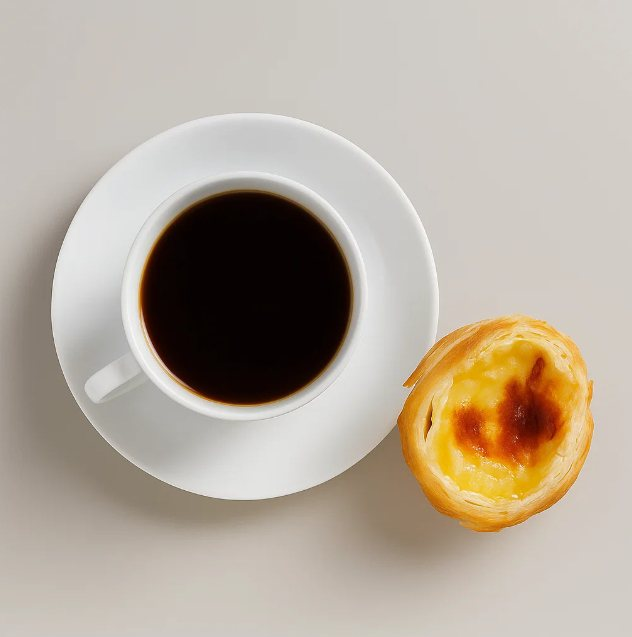
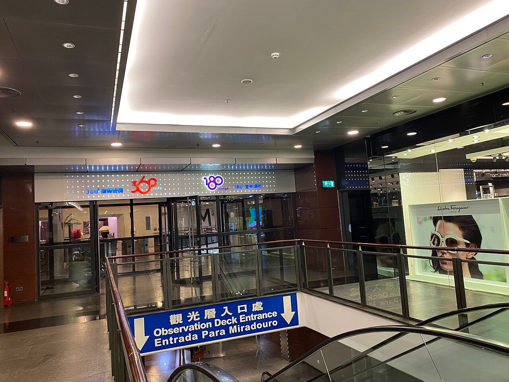
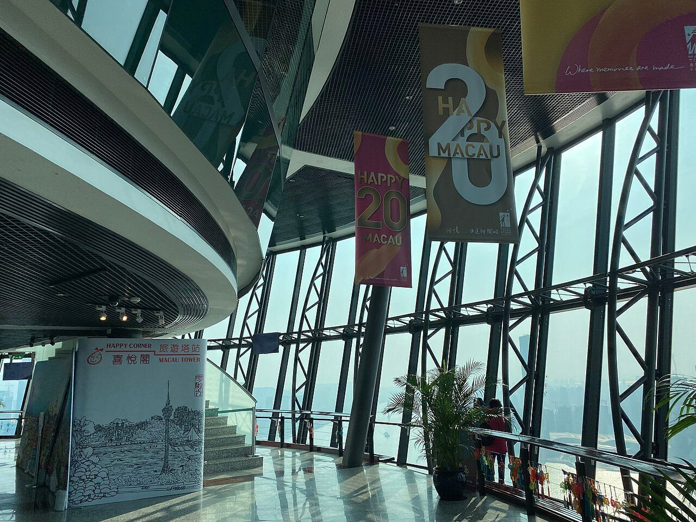
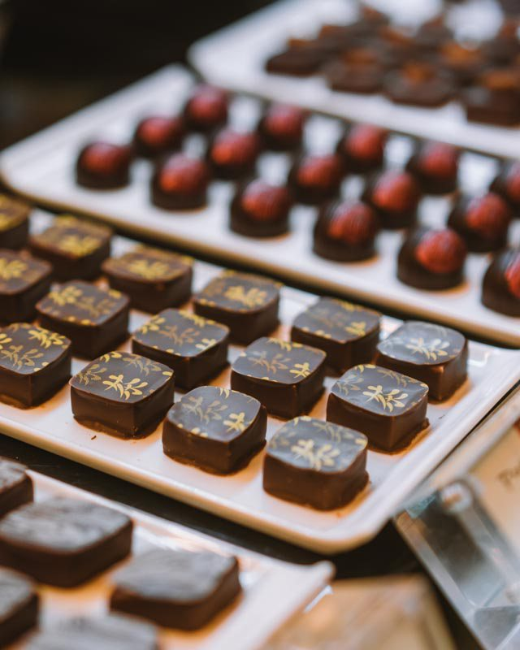

签到、寄存、领热饮
核对预约、寄存器材，当日日出时刻和天气提示就立在签到台旁。


01清晨流程 · SUNRISE FLOW
核对预约、寄存器材，当日日出时刻和天气提示就立在签到台旁。

早场快速通道上 58 层，电梯里会提示今天的日出方位。

三脚架进摄影区，只看不拍的留在安静区；层内灯光已调暗，减少玻璃反光。

广播提示最佳朝向，日出后一起击掌、亮灯，拍下当天的第一张照片。
领早餐或热饮，给纪念证书盖当日日期章，在打卡角落留一张；07:00 起分批离场。

以夏季 05:50 日出为例 · 出发前查澳门气象局天气
02到场方式 · ARRIVAL
酒店 → 塔底迎宾区 → 58 层
市区 → 塔底迎宾区 → 58 层